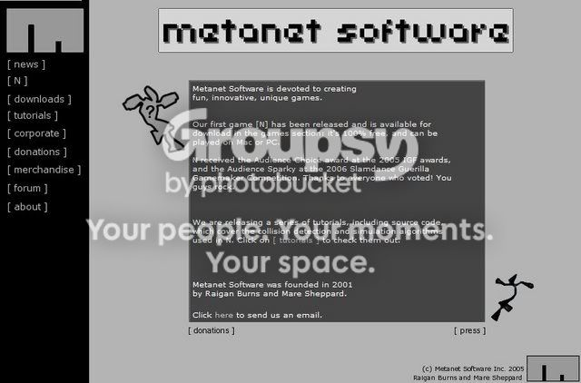
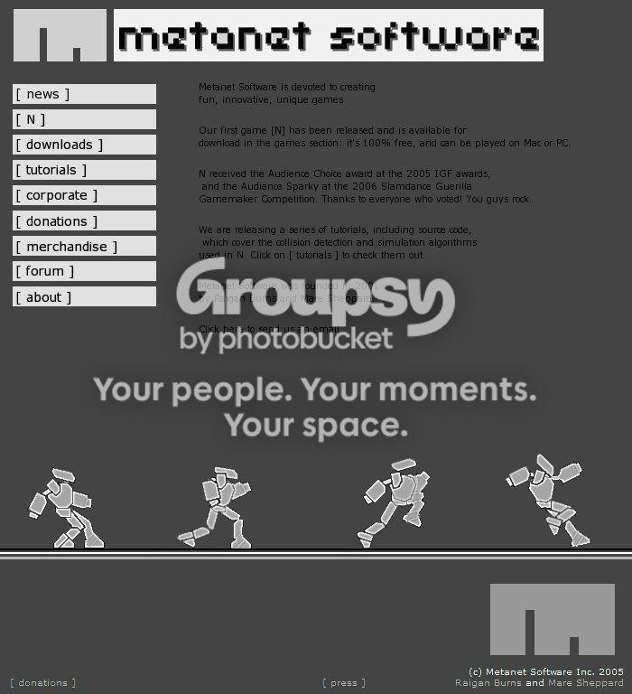

I made the Metanet Homepage in my free time and i think it come out great it would be cool if we used it.Do you think its better than the original one?

| Much Better | 2 |
| Better | 1 |
| Same | 1 |
| Worse | 5 |
| Much worse | 3 |



I think that the black works well for that site. It does for this site too!
Clicky
